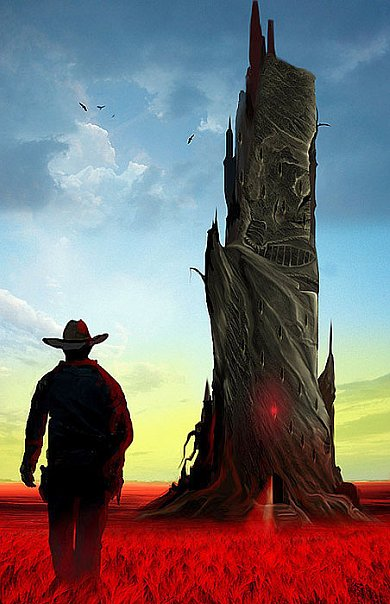
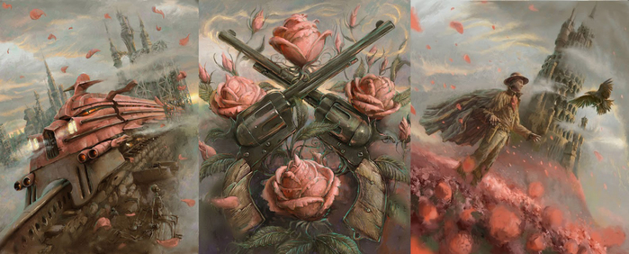

Тёмная Башня (англ. The Dark Tower) — цикл романов американского писателя Стивена Кинга, написанный на стыке фэнтези, ужасов, научной фантастики, вестерна и других жанров. Серия повествует о долгих странствиях стрелка Роланда Дискейна в поисках легендарной Тёмной Башни. Стивен Кинг называл этот цикл своим magnum opus. Цикл о Темной Башне включает в себя множество тем, персонажей и сюжетных линий из других, не связанных друг с другом книг Кинга. «Тёмная Башня» была вдохновлена поэмами Роберта Браунинга «Чайльд-Роланд дошёл до Тёмной Башни» и Томаса Элиота «Бесплодная земля». В новом предисловии первой книги «Стрелок» к переизданию 2003 года Кинг также упоминает фильм «Хороший, плохой, злой» и роман «Властелин колец» как вдохновителей. Прообразом центрального персонажа серии — Роланда Дискейна — послужил безымянный герой кинематографической Долларовой трилогии, сыгранный Клинтом Иствудом.
Роланд — последний член древнего рыцарского ордена стрелков. Благородный рыцарь в мире, «сдвинувшемся с места». Ему во что бы то ни стало нужно найти Тёмную Башню — средоточие Силы, краеугольный камень мироздания. Поначалу в одиночку, а потом с группой верных друзей — своим «ка-тетом» — он совершает длительный поход по постапокалиптическому миру, напоминающем Америку старого Запада, в котором присутствует магия. Путникам противостоит могущественный колдун — «человек в чёрном», некогда предсказавший Роланду судьбу по картам Таро. Приключения Роланда и его спутников включат в себя посещение и других миров и временных эпох, включая Нью-Йорк XX века и опустошенный пандемией гриппа мир «Противостояния». Роланд уверен, что если он дойдёт до центра всех миров, до Тёмной Башни, он сможет подняться на её верхний уровень, чтобы увидеть, кто управляет всем Мирозданием и, возможно, восстановить порядок мира.
| 1982 | «Стрелок» (англ. The Dark Tower: The Gunslinger) |
|---|---|
| 1987 | «Извлечение троих» (англ. The Dark Tower II: The Drawing of the Three) |
| 1991 | «Бесплодные земли» (англ. The Dark Tower III: The Waste Lands) |
| 1997 | «Колдун и кристалл» (англ. The Dark Tower IV: Wizard and Glass) |
| 2003 | «Волки Кальи» (англ. The Dark Tower V: Wolves of the Calla) |
| 2004 | «Песнь Сюзанны» (англ. The Dark Tower VI: Song of Susannah) |
| 2004 | «Тёмная башня» (англ. The Dark Tower VII: The Dark Tower) |
| 2012 | «Ветер сквозь замочную скважину» (англ. The Dark Tower: The Wind Through the Keyhole) |
Роланд Дискейн, сын Стивена и Габриэль Дискейнов, родился в феоде Гилеад, во Внутреннем мире. Роланд — последний выживший к началу событий первой книги стрелок, человек, единственной целью которого является найти Тёмную Башню — легендарное место, которое удерживает все миры от разрушения и хаоса — и достигнуть её вершины.
Джейк Чеймберз - одиннадцатилетний мальчик из Нью-Йорка 1977 года. Имя, данное Джейку при рождении — Джон, но он предпочитает, чтобы его звали Джейком; экономка семьи Джейка, которая намного ближе Джейку, чем его собственные родители, называла его Бама. Мальчик и стрелок путешествуют вместе, преследуя Человека в чёрном, и укрепляя свою дружбу на этом пути. В пути Роланд становится перед выбором — спасти Джейка и остановиться, или же дать Джейку погибнуть и продолжать погоню за Человеком в Чёрном (и путь к Башне).
Эдди Дин - двадцатитрёхлетний наркоман, который в начале книги впервые в своей жизни перевозил кокаин по поручению мафиози Энрико Балазара. Эдди, попав в мир Роланда, вынужден был справляться со своей зависимостью от героина, но несмотря на страдания, его привлекла возможность самому стать стрелком. Сперва не желая того, и частично по принуждению со стороны Роланда, Эдди становится попутчиком Роланда на пути через Срединный мир.
Сюзанна Дин - уроженка Нью-Йорка, двадцатишестилетняя афроамериканка. Сюзанна — инвалид: её ноги ниже колен были ампутированы в результате несчастного случая в метро. Кроме этого, Сюзанна страдала раздвоением личности.
Ыш - ушастик-путаник, один из представителей фауны мира Роланда. Эти животные описываются, как нечто среднее между енотом и собакой, со спиралевидным закрученным хвостом. Необычны тем, что могут имитировать человеческую речь, обычно повторяя окончания слов, услышанных от людей.
В 2007 году компания IGN Movies сообщила, что ведет работу над фильмом о приключениях Роланда. Сообщалось, что его продюсером и режиссёром станет Дж. Дж. Абрамс. Дж. Дж. Абрамс и Деймон Линделоф купили права на экранизацию серии «Темная Башня» за 19 долларов (это число является одним из ключевых понятий в книгах цикла). В снятом в 2007 году фильме «Мгла» главный герой, художник Дэвид Драйтон показан рисующим постер к фильму с Роландом в центре, стоящим перед дверью из железного дерева, с розой и Темной Башней по обеим её сторонам. В феврале 2008 Абрамс заявил, что он и Линделоф приступили к написанию чернового варианта сценария. Но в ноябре 2009 Абрамс объявил: «Вряд ли найдётся больший фанат „Тёмной Башни“, чем я, но это наверное хорошая причина тому, чтобы адаптировал этот материал не я. После шести лет работы над сериалом „Остаться в живых“, последнее, чем я хочу быть занят — это потратить ещё семь лет на адаптацию самого моего любимого цикла книг. Я огромный фанат Стивена Кинга, так что я ужасно боюсь это испортить. Я бы всё отдал, чтобы кто-то другой написал сценарий. Я думаю, что эти фильмы сняты будут, потому что они настолько великолепны. Но только не мной». 8 сентября 2010 было официально объявлено, что экранизацией цикла займутся Акива Голдсман, Брайан Грейзер и Рон Ховард. Материал цикла будет представлен в качестве трёх художественных фильмов, между которыми будут показаны два сезона телевизионного сериала. В частности, Кинг сказал по поводу этого проекта: «Я ожидал подходящую команду, чтобы воплотить персонажей и истории из моих книг для кино- и телезрителей всего мира. 30 апреля 2011 года Хавьер Бардем был официально утверждён на роль стрелка Роланда Дискейна. 16 июля 2011 на официальном сайте Кинга было объявлено о том, что проект не будет осуществлён студией Universal. Несмотря на это, Стивен Кинг остался уверен, что Ховард и его команда найдут для проекта новый дом. 12 марта 2012 стало известно, что студия Warner Bros. заинтересовалась проектом, вместе со своей дочерней компанией, кабельным телеканалом HBO. На роль Роланда планировали пригласить Рассела Кроу. Но в августе 2012 года и эта студия отказалась от своих планов. Высказывалось предположение, что экранизацией могла заняться Media Rights Capital. В мае 2013 появилась информация о том, что Рон Ховард не оставил окончательно планов снять «Темную башню» и может вернуться к работе над проектом вместе с компанией Netflix. В январе 2014 года появилась информация о возможном участии в проекте Аарона Пола в роли Эдди Дина и Лиама Нисона в роли Роланда, а также о вероятном полном переходе проекта на сериальные рельсы. 10 апреля 2015 года Sony Pictures и компания MRC договорились о финансировании проекта по книгам цикла «Темная башня», состоящего из фильмов и дополнительного телесериала. Новый сценарий основан на первой книге «Стрелок». Первоначально роль Стрелка должен был исполнить Мэттью Макконахи, однако в январе 2016 стало известно, что на роль вместо Макконахи утвержден Идрис Эльба. Мировая премьера фильма изначально была запланирована на 17 февраля 2017 года, но затем студия перенесла премьеру фильма на 28 июля 2017 года.
Музыкальный коллектив Demons and Wizards в 2005 году выпустил CD, названный ими "Touched by the Crimson King". Ниже приведен список композиций из альбома, которые непосредственно связаны с циклом:
Blind Guardian - группа известна своими обращениями к произведениям жанров fantasy и science-fiction. Не обошли они своим вниманием и творчество Стивена Кинга.
Dennis Downing - в 2003 году выпустил диск Territories («Долины»), наполненный своеобразными «саундтреками, написанными под вдохновением от саги Стивена Кинга „Темная Башня“».